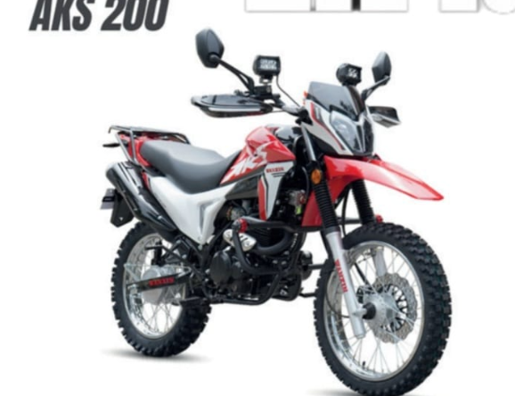
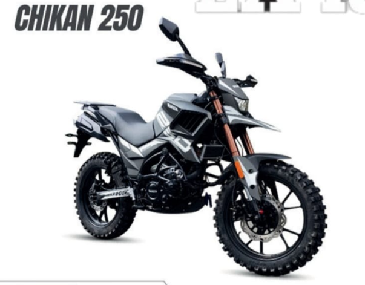
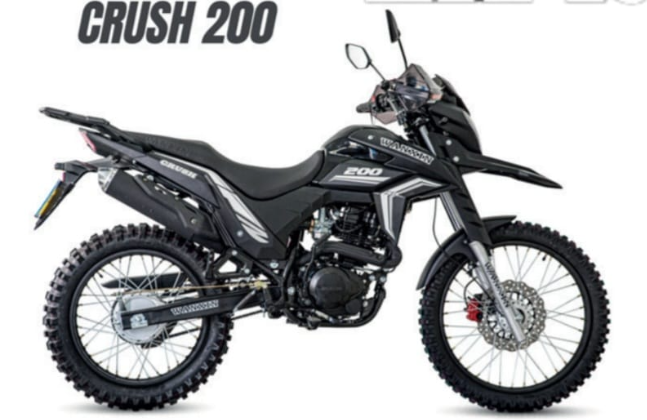
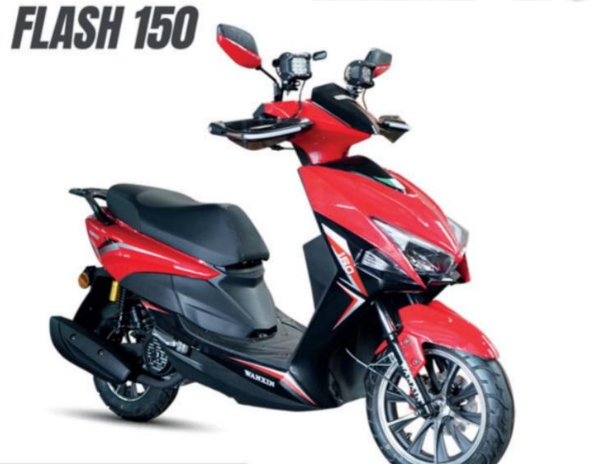
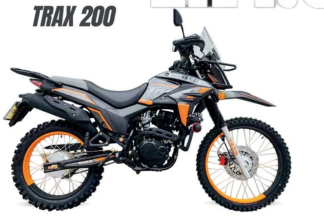
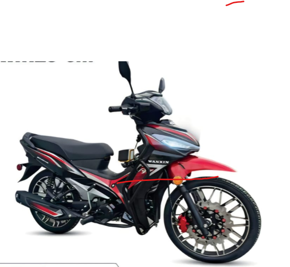
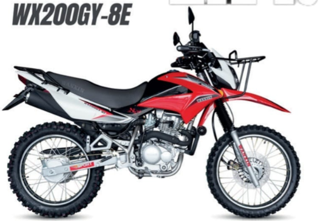
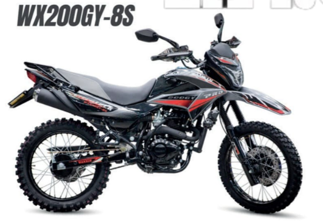
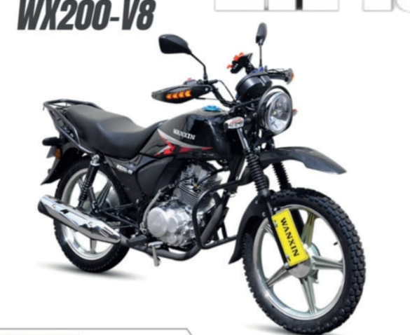

Wanxin
Doble propósito
AKS 200
Modelo de 200 cc con estilo doble propósito y ruedas de diseño mixto.
Explora los modelos Wanxin disponibles. Confirma con la tienda las especificaciones completas y la disponibilidad actual.
Modelos, cilindrada y estilo según el nombre y las imágenes recibidas. Consulta ficha técnica, garantía y disponibilidad antes de comprar.

WanxinModelo de 200 cc con estilo doble propósito y ruedas de diseño mixto.

WanxinModelo de 250 cc con configuración para recorridos en ciudad y caminos.

WanxinModelo de 200 cc con diseño doble propósito y ruedas de radios.

WanxinScooter de 150 cc con plataforma amplia para uso urbano.

WanxinModelo de 200 cc con neumáticos de labrado para recorridos mixtos.

WanxinModelo urbano de 125 cc. Consulta ficha técnica y características de esta versión.

WanxinModelo de 200 cc con configuración doble propósito y neumáticos de tacos.

WanxinModelo de 200 cc con estilo doble propósito y ruedas de radios.

WanxinModelo urbano de 200 cc con asiento amplio y parrilla posterior.
Indica el modelo que te interesa y en qué ciudad necesitas recibirlo.
Videos de productos, novedades y actividades de la importadora.